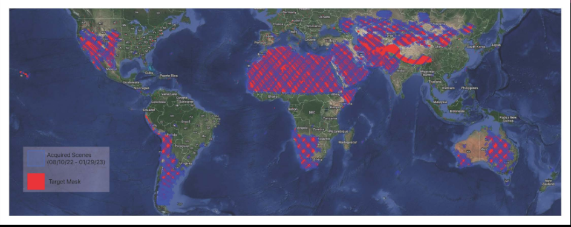
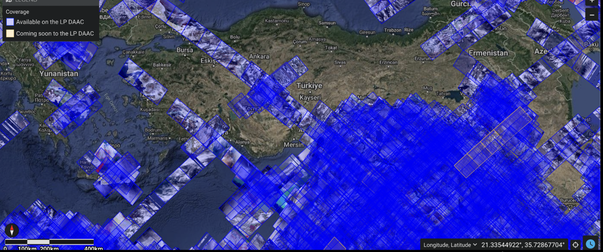
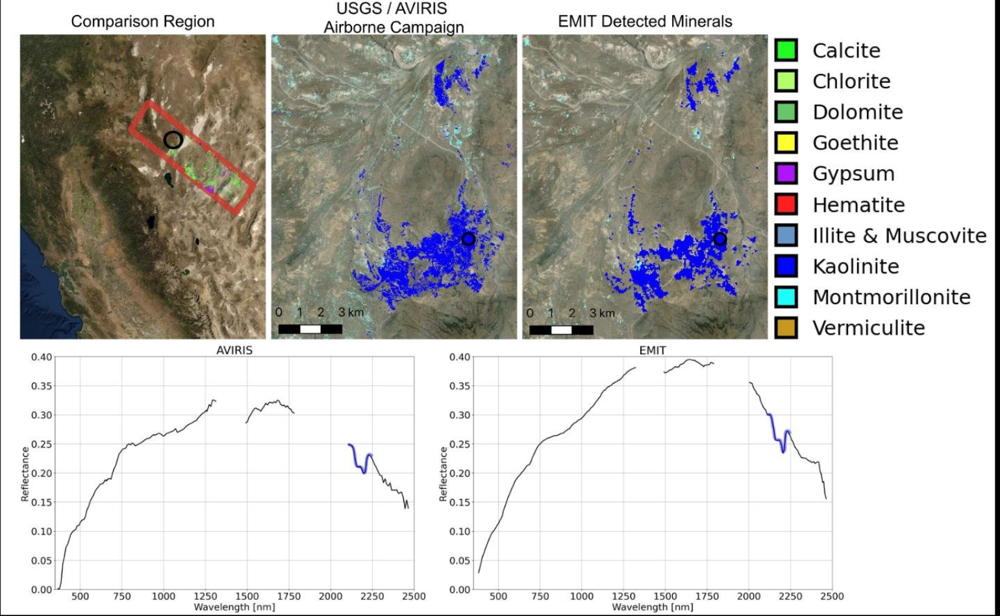
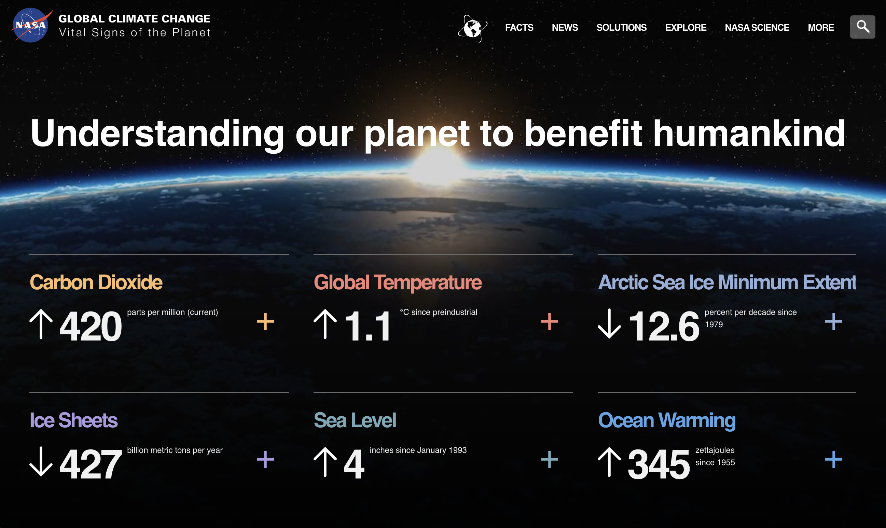
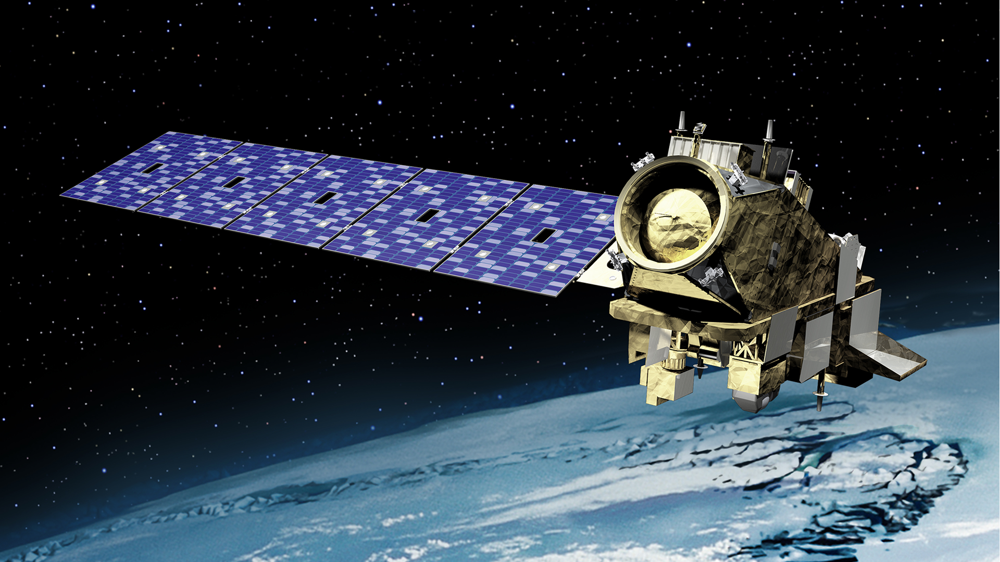

OUR MISSION
-

“Identifying areas where mineral dust settles using the EMIT satellite data to create sustainable agricultural systems”
Data Utilization When dust settles on both land and water surfaces, it brings with it valuable nutrients that can nurture ecosystem growth. Leveraging this natural phenomenon, our objective is to identify areas where mineral dust settles using the EMIT satellite data. Through this, we aim to create more sustainable and efficient agricultural systems.
-
VISIONS (the VSWIR Imaging Spectroscopy Interface for Open Science) the EMIT Open Data Portal
Analyzing EMIT Data: Examining the EMIT data to identify areas abundant in mineral dust. In visuals, blue-colored regions indicate the latest dust coverage data in Turkey.
Using EMIT for Mineral Identification: Leveraging EMIT data to identify the mineral composition of dust source regions accurately. This information is crucial for understanding the environmental impact of the dust.
Creating Mineralogical Maps: Generating mineralogical maps, as demonstrated in image below This map showcase the distribution of specific minerals within the region, providing valuable insights into the mineral content of the Earth's surface.
Utilizing the mineralogical maps to assess the suitability of farmlands for sustainable agriculture. Different minerals can influence soil quality and crop growth differently, so this assessment helps identify the most appropriate areas for farming.

-
FEATURED PAGES
About Us
-
-

Greenhouse Gases
-

CO2 and Methane Metadatas
-